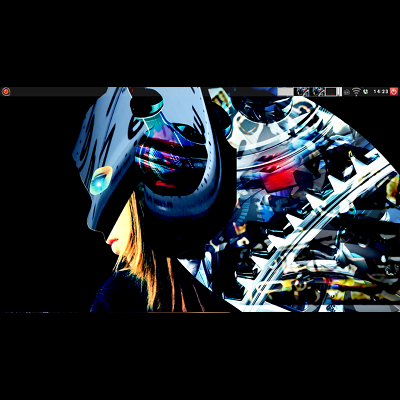

Concept & MindMap
Webサイト「VSRX-2020」では、オリジナルOSやオリジナルアプリケーション、オリジナルライブラリの開発と公開、各ソフトウェアのリファレンスとプログラミング言語などの利用におけるテクニックを公開しています。「既存技術をベースに、SF映画などで出てくるような新しい物を創造していこう。」というコンセプトがあります。


Valkyrie Linuxは、Ubuntu 18.04 LTSをベースに、カスタムカーネルやオリジナルアプリ「Viper Tools」、デスクトップ環境「LXQt」、ウィンドウマネージャー「Openbox」によって高速チューンや大幅な機能強化して開発をした64bit OS(Linuxディストリビューション)です。
Valkyrie Linux Download
Valkyrie Linux Documentation

カスタムカーネルとオリジナルアプリ
LinuxカーネルをカスタマイズしたNoir linux kernelは、システムのレスポンスの向上とパフォーマンスの向上を両立させています。
linux kernel sourceをベースにし、レスポンス性能やパフォーマンス性能を向上させるサードパーティー性の各種パッチを多数適用しています。
グラフィックドライバ「Mesa 20」の最新版、最新のlinux-firmwareを組み合わせる事で、3Dグラフィックス性能が従来よりも大幅に高めています。
Custom Kernel Download
Viper Toolsは、Pythonとシェルスクリプトで開発したオリジナルアプリケーションです。Ubuntu系OS向けに、リマスター機能やカーネルビルド機能、数字選択式宝くじなどの予想、アニメーションSVG作成などを有しています。
Viper Tools Download
Viper Tools Documentation
サウンドは、PulseAudioの設定を変更する事で高音質化を実現しています。
Webアプリケーションをデスクトップアプリケーションのように活用する事が出来る「Specific Site Browser(SSB)」という仕組みを導入していますので、Webアプリケーションを直ぐに使う事が可能です。
Linux・Windowsのアプリケーションの実行環境の提供、ソフトウェア開発・Web開発環境の提供、マルチメディアコンテンツ作成環境の提供、先端的な科学技術・データサイエンス環境の提供を行っています。
GIMPやAvidemuxやShotcutやOBS StudioなどWindowsやLinuxなどでお馴染みのアプリケーションをフル装備しています。
最初からプログラミング・オフィス文書作成・画像編集・動画エンコード・動画編集・音楽再生・オンラインサービスの利用する事が可能です。また、PSP・PS2・Dreamcastなどのゲームエミュレーション（別途ROM・BIOS必要）やWindowsアプリケーションを利用する事が出来ます。
VAAPI対応ドライバを採用している為、動画支援機能で低CPU負荷で動画を再生出来ます。
Ubuntuの長期サポート版（LTS）のリポジトリと共有していますので、Main,RestrictedのコンポーネントをUbuntuの公式サポートで最新の状態に維持しています。更にPPAから最新のバージョンのアプリケーションを導入しています。
Openboxの右クリックメニューからアプリケーションを起動させる仕組みになっており、様々な機能を使えます。
また、コマンドランチャー「gmrun」を使ってアプリケーションの起動を行う事も可能です。
オリジナルキャラクター「アリサ」「ソフィア」「クリスティーナ」
 VRoidとMMD(Miku Miku Dance)モデルとして、オリジナルキャラクター「アリサ」と「ソフィア」「クリスティーナ」を作りました。
VRoidとMMD(Miku Miku Dance)モデルとして、オリジナルキャラクター「アリサ」と「ソフィア」「クリスティーナ」を作りました。
VRoid Hubで公開中です。
https://hub.vroid.com/users/16643677
YouTubeチャンネル「Dark Matter」
アリサやソフィアによるコンテンツをYouTubeで公開しています。また、今まで観覧したイベント・アイドルライブの模様、花見・花火などの模様を撮影した動画、MADやゲームプレイ動画などを公開しています。その他には、YouTubeで視聴してきた動画の再生リストを大量に公開しています。
spider.js & siren.css
JavaScriptライブラリ「spider.js」は、AjaxやDOMアニメーション、CSSアニメーションなどの機能を提供します。
spider.js Download
spider.js Documentation
CSSフレームワーク「siren.css」は、レスポンシブデザインとCSSアニメーションを使ったページデザインを実現します。
siren.css Download
siren.css Documentation
Hacks
プログラミング言語のテクニックを纏めています。
Ubuntu Hacks
Python Hack
Java Hack
JavaScript Hack
CSS Hack
GAMES & ARTS & Novel
- M.U.G.E.N Full Game
Crossover Download
- 2D shooting game(with Processing)
Acid Core Online(Shooting game)
- Art wroks(with Processing)
Card Shuffle
RBW
Worp Man
Spider Ball
Prism
Sea
Snow Circle
- 短編小説を公開中
https://mypage.syosetu.com/1615088/
https://monogatary.com/user_page/story/8658ed0c-7204-11eb-b4c7-0242ac120002
Profile
takamitsu hamada
Software developer
I'm from Osaka city, Osaka prefecture.
Graduated from the Department of Electrical Engineering, Osaka Institute of Technology
I develop Linux distribution "Valkyrie Linux", Javascript Library "spider.js", Linux application "Viper Tools", VRoid/MMD "Alisa and Sophia" and others.
Bachelor's degree (Engineering)
Title: CG-ARTS Digital Media Meister
Used the programming language : Python · JavaScript · Shell Script
Develop Environment
[PC]
Main PC：
CPU : Pentium G 4600（3.6GHz dualcore/4threads、Kaby Lake）
Motherboard : ASROCK B150M-COMBO-G(Micro-ATX、DDR4/DDR3)
Memory : CFD DDR3-1600 4GBx2
Case : Century CSI-1299GG(Black、Mini Tower)
Power Supply : Silverstone ST30SF
Strage : Intel SSDSC2KW256G8 256GB,SanDisk SDSSDA240G 240GB,Toshiba MQ01ABD050(2.5inch HDD 500GB)
Graphicboard : MSI RADEON RX 460 2GB GDDR5
2ndPC:
STCK1A32WFC
OS
Valkyrie Linux 21v6(based Ubuntu 18.04.5 LTS)
Browser : Chromium Browser 87
IDE : emacs nox
Other tools : GIMP 2.10,Shotcut,OBS Studio,Avidemux